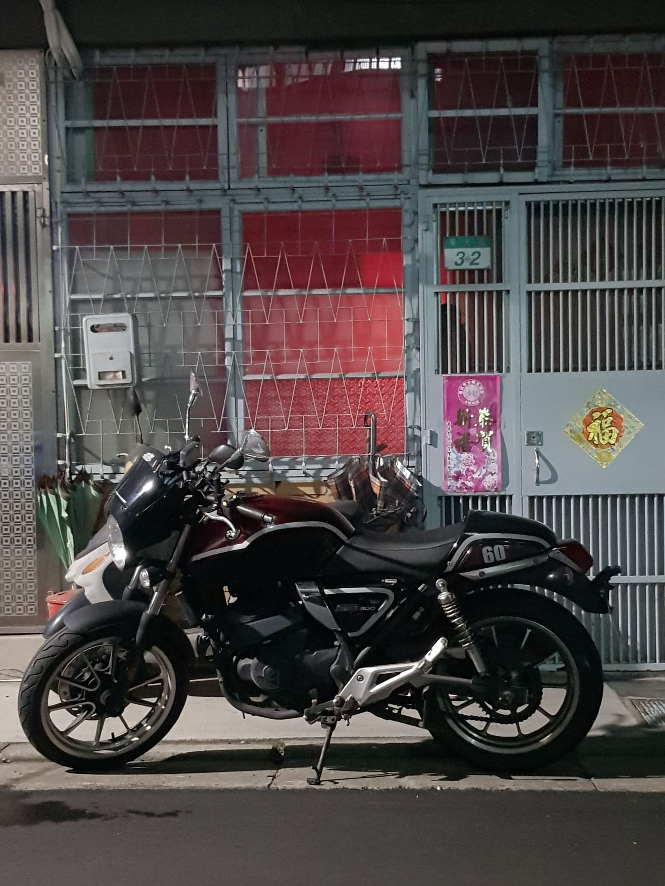
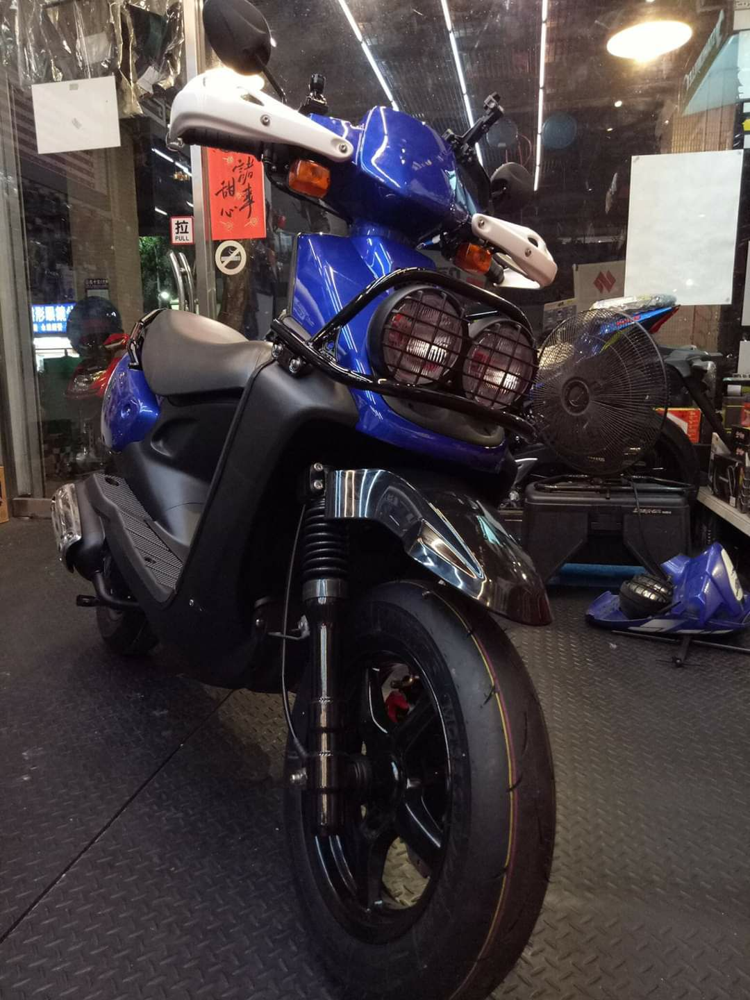

這是關於我的一些事情
就學經歷
學校
科系
大安高工
電子科
勤益科技大學
資訊管理系
淡江大學
資訊工程系
工作經歷
公司
工作內容
冠潔企業社
工程裝修
尚智運動世界
客製化服飾訂製
嘉利科技
刷卡機設備
技能、專長與證照
自動控制 儀器操作 基礎程式編寫
Microsoft Office Specialist
上面這些，是查得到的資料
接下來，讓我來說說我認知的自己吧
我叫潘成典
出生至今
已經過了
分鐘
相當於
小時
差不多是
天
也就是
歲
如同上面所寫的
我目前是個大學生
但我有在外工作的社會經歷
而雖然只是監獄的替代役
但我也已經退伍一段時間
算是一個小小的優勢
我喜歡
打籃球
而且是很喜歡的那種
我也喜歡攝影
尤其是風景，特別是夜景

我有一台黃牌的重機

但我也很喜歡老車
我很享受出國玩的感覺
尤其是韓國，特別是韓國
Previous
Next
接下來
就讓我
用幾張簡單的照片
來說明一下
我是個怎樣的人吧
非常感謝各位看到這邊
雖然這個頁面照理講應該是要打成履歷表
而目前這樣要當成履歷表還實在是有點太過粗糙
但我實在不希望把版面弄得跟人力銀行的履歷一樣
所以我希望用稍微活潑一點的方式來呈現
還請各位不要棄嫌